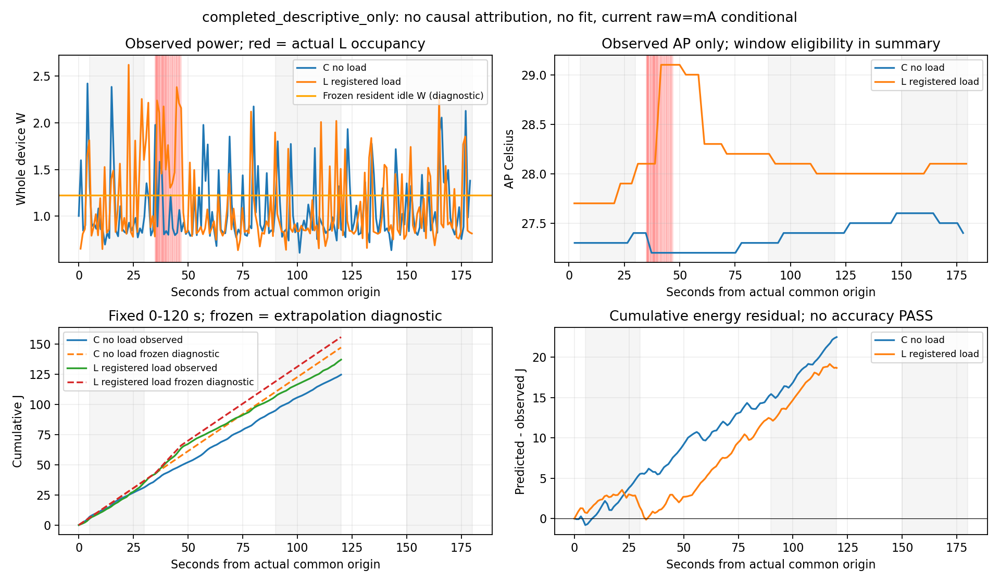

실측 C0 → L24 · 40추론 · 679.531초 · ADB1,543 · APK push/설치0 · 재시도0.
구조 판별용 개발 한 쌍, 독립 확인·인과 귀속·정확도 PASS 아님. 시작 AP C27.3/L27.7°C는 개발 범위 밖. 동결식은 외삽 진단, AP는 관측만 표시. experiment_ready=false.
| arm | 관측120초 J | 동결식 진단J | 예측−관측J | pre→late W |
|---|---|---|---|---|
| C 무부하 | 124.545817 | 147.052011 | +22.506194 | 0.971881→0.989955 |
| L 등록 부하 | 137.005431 | 155.685079 | +18.679647 | 1.195793→1.011505 |
변화 차이 −0.202361W. 시작조건·사전 전력·고정 순서가 다르므로 순수 부하 효과가 아닙니다. 실제 CG_DC lane 겹침1.455957초. L 냉각후기150–180초는 전력0.176161초 결측 및 AP bracket 부재로 J/W/AP null; 창 이동·0채움 없음.

회색: 고정 판독창, 빨강: 실제 L 점유. 0/120초 누적J는 적분 경계, 센서값 생성 아님. AP 예측 그림이 아닙니다.
보고서·재현 · 전체 요약 · 고정창 · 경로 · 상태 · lane · 검증 · SVG
앱 cleanup 두 세션 완료, host 정리 완료와 대상 프로세스 부재는 별도 원본 증거로 확인. plan_v3 소비·완료, 기존 v1/v2 stopped_no_resume 보존. 추가 실행 없음.